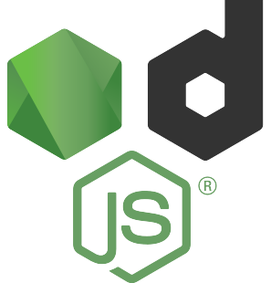
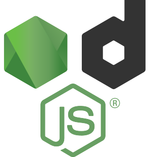
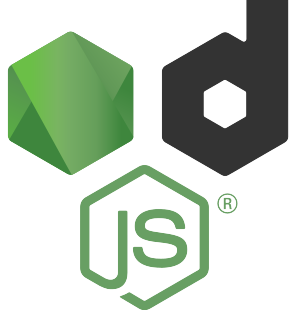

¡Potencia tu desarrollo web con los frameworks mas usados en el 2023!

Frameworks más usados en 2023
En 2023, hay varios frameworks de desarrollo web que se destacan por su popularidad y adopción en la industria.
Estos frameworks ofrecen herramientas y funcionalidades que permiten a los desarrolladores crear aplicaciones
web de manera eficiente y efectiva. A continuación, te proporciono algunos de los frameworks
de desarrollo más utilizados en 2023:
React.js
Angular
Vue.js
Django
Ruby on Rails
Estos son solo algunos ejemplos de los frameworks de desarrollo web más utilizados en 2023. Cada uno tiene sus
propias características y fortalezas, por lo que es importante evaluar las necesidades específicas de tu
proyecto antes de elegir el framework más adecuado.


 
